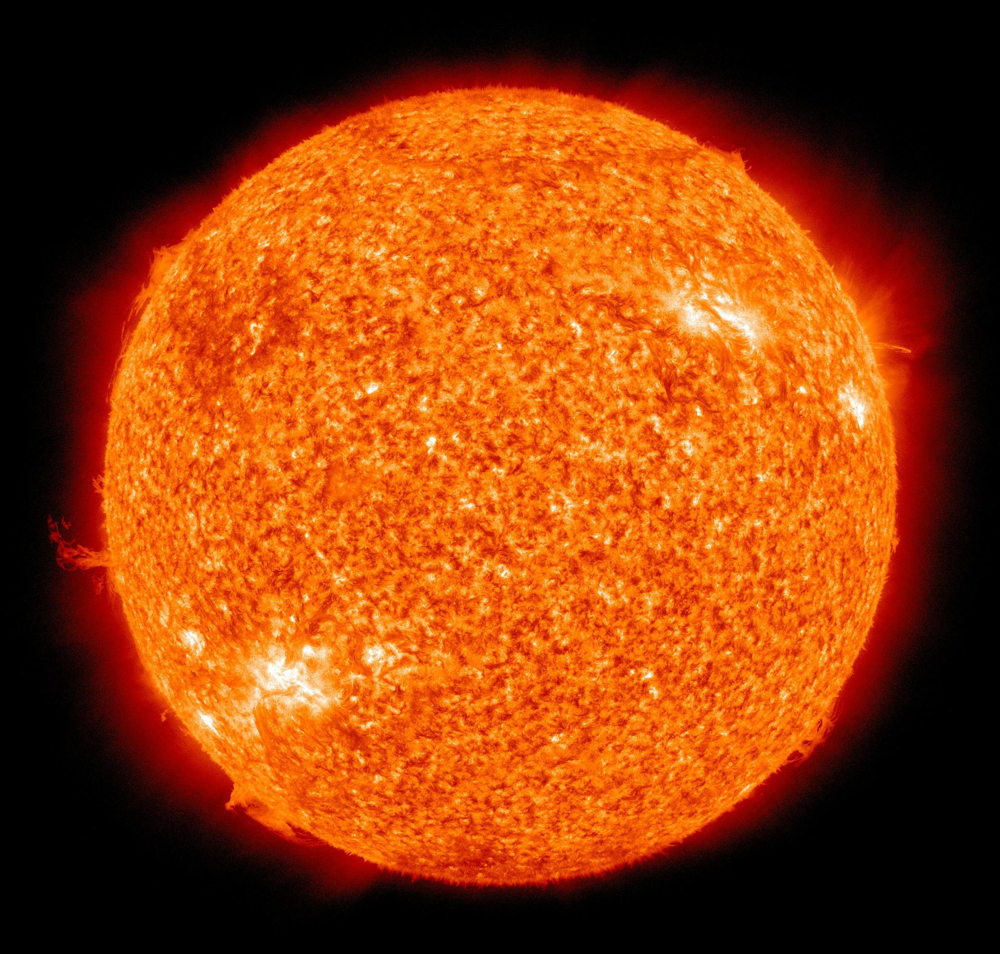
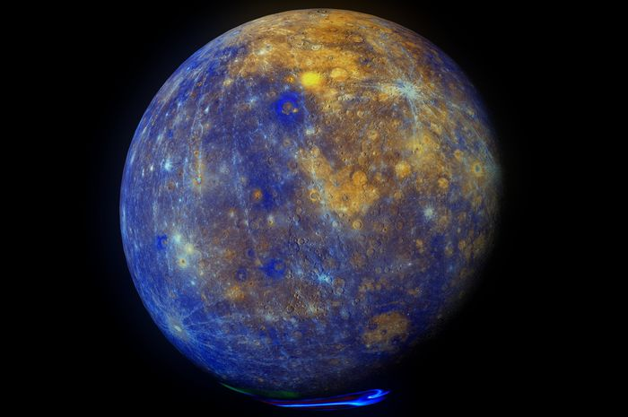
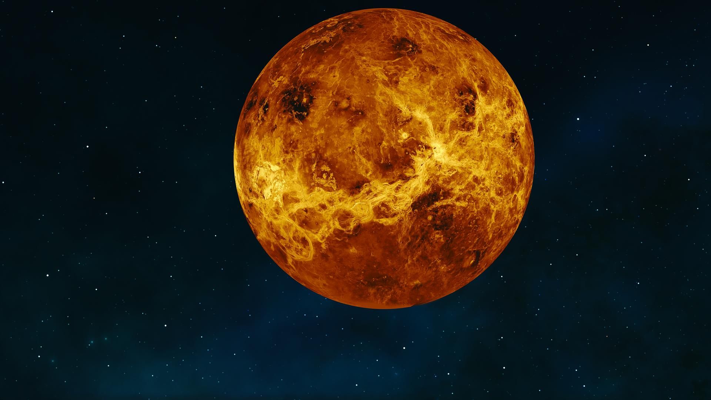
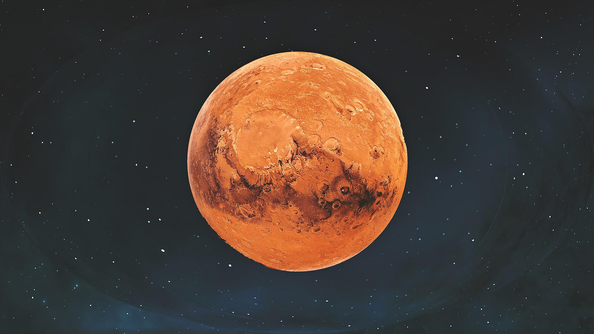
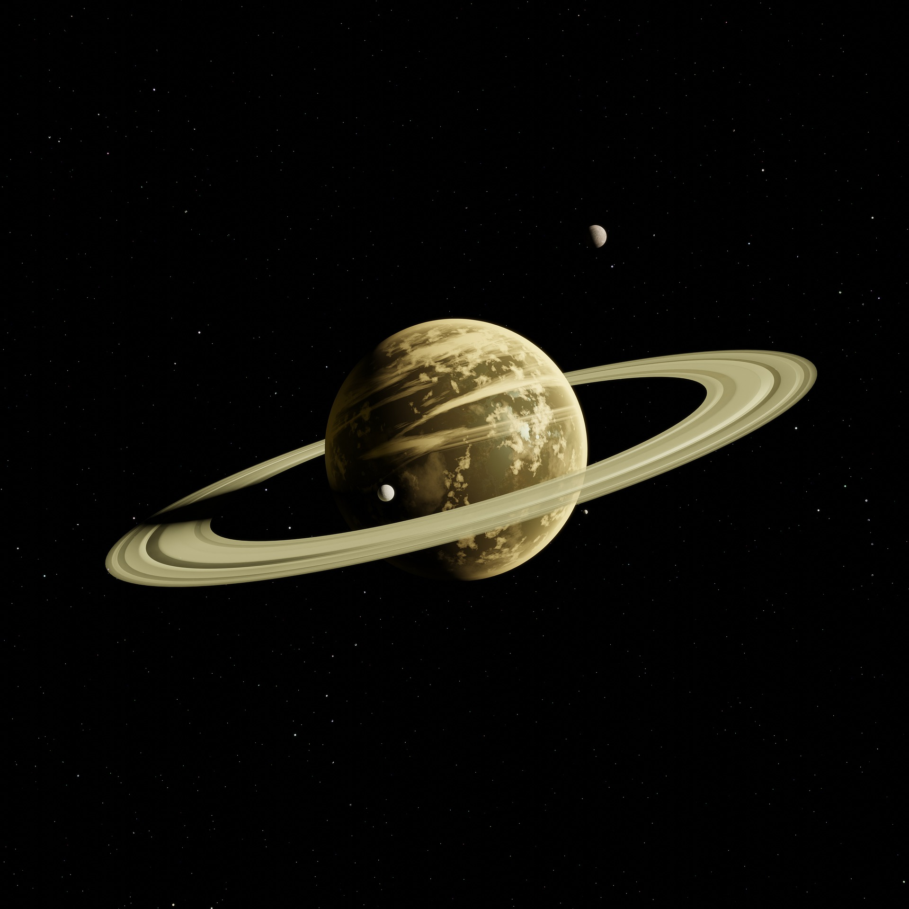
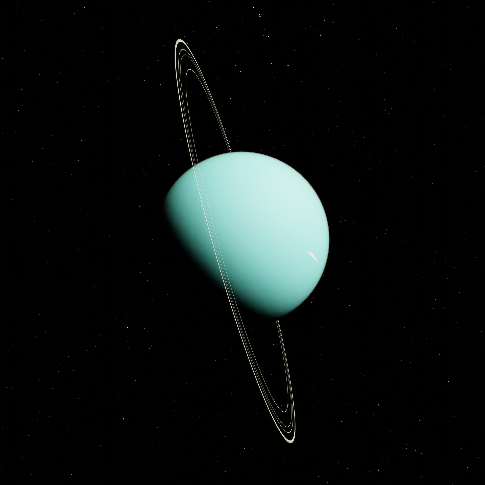
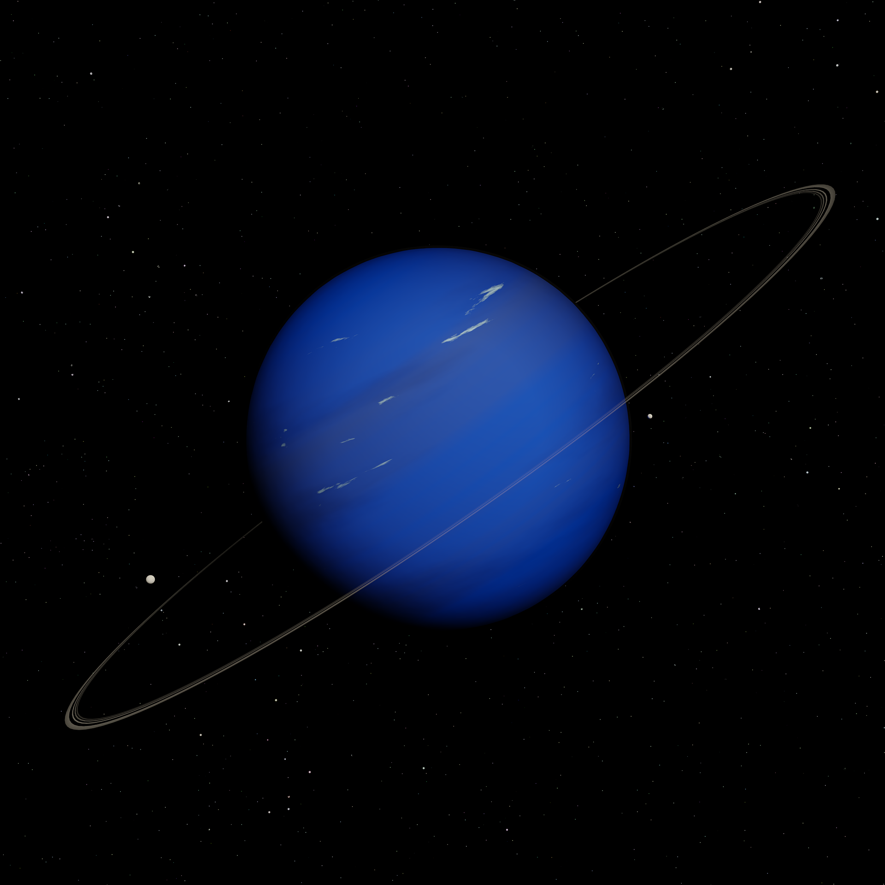

Planet adalah sebuah benda langit yang mengorbit pada suatu bintang, dengan lintasan dan kecepatan tertentu.

Matahari
Matahari adalah pusat tata surya. Matahari merupakan sebuah bintang yang paling dekat dengan bumi. Seperti bintang lainnya, Matahari merupakan sebuah benda panas yang tersusun oleh berbagai gas yang bertekanan tinggi. Matahari adalah raksasa jika dibandingkan dengan planet yang terbesar sekali pun. Diameter Matahari 109 kali diameter Bumi, yaitu 1,4 juta km. Walaupun Matahari itu berbentuk gas, beratnya lebih dari 300.000 kali berat Bumi.
Suhu permukaan matahari 6.000 derajat celsius yang dipancarkan ke luar angkasa hingga sampai ke permukaan bumi, sedangkan suhu inti sebesar 15-20 juta derajat Celsius. Matahari memancarkan energi yang sangat besar dalam bentuk gelombang elektromagnet. Gelombang elektromagnet tersebut adalah gelombang cahaya tampak, sinar X, sinar gamma, sinar ultraviolet, sinar inframerah, dan gelombang mikro.

Merkurius
Diantara delapan planet utama di tata surya, planet Merkurius merupakan planet yang paling dekat dengan Matahari. Jarak rata-rata Merkurius terhadap Matahari adalah 58 juta kilometer atau 0,4 kali jarak Bumi terhadap Matahari. Planet Merkurius mengelilingi Matahari (revolusi Merkurius) sekali putaran membutukan waktu 88 hari di Bumi. Sehingga bisa dikatakan satu tahun di Merkurius sama dengan 88 hari di Bumi. Orbit Merkurius mengelilingi matahari berbentuk elips dengan nilai eksentrisitas sebesar 0,21. Sehingga Merkurius mempunyai jarak terjauh terhadap Matahari dan jarak terdekat terhadap Matahari. Jarak terjauh Merkurius terhadap Matahari adalah 70 juta kilometer dan jarak terdekat Merkurius terhadap Matahari adalah 47 kilometer.
Selain sebagai planet terdekat dengan Matahari, Merkurius juga merupakan planet yang paling kecil di tata surya. Merkurius memiliki diameter sebesar 4.880 km atau sekitar 1/3 diameter Bumi. Suhu di permukaan Merkurius sangat ekstrem. Saat siang suhu di permukaan Merkurius bisa mencapai 430o Celsius dan saat malam suhunya mencapai -180o Celsius. Selain mengelilingi Matahari, Merkurius juga berputar pada porosnya (rotasi Merkurius). Merkurius membutuhkan waktu 59 hari untuk mengitari porosnya. Jadi, satu hari di Merkurius sama dengan 59 hari di Bumi. Jika diamati dari teleskop, Merkurius akan menampilkan serangkaian fase yang mirip dengan fase Venus dan Bulan, ketika bergerak di orbit bagian dalamnya yang relatif terhadap Bumi dan terjadi berulang dalam satu siklus sinodiknya, yakni sekitar 116 hari. Meskipun dekat dengan Matahari, Merkurius memiliki air es abadi yang berada di kutub-kutubnya, hal ini dikarenakan lokasi es ini tidak pernah menerima cahaya Matahari.

Venus
Venus adalah planet terdekat kedua dari Matahari setelah Merkurius. Planet ini mengorbit Matahari selama 224,7 hari Bumi.Venus tidak memiliki satelit alami dan dinamai dari dewi cinta dan kecantikan dalam mitologi Romawi. Setelah Bulan, planet ini merupakan objek alami tercerah di langit malam, dengan magnitudo tampak sebesar −4,6 yang cukup cerah untuk menghasilkan bayangan.Venus merupakan planet inferior dengan sudut elongasi yang mencapai 47,8°. Kecerahan maksimal planet ini dapat dilihat segera sebelum matahari terbit atau setelah matahari terbenam, sehingga disebut Bintang Fajar atau Bintang Senja.
Venus adalah planet kebumian dan kadang-kadang disebut “planet saudara” Bumi karena ukuran, gravitasi, dan komposisi yang mirip (Venus merupakan planet terdekat dari Bumi dan planet yang ukurannya paling mendekati Bumi). Namun, dalam hal lain planet ini sangat berbeda dari Bumi. Planet ini memiliki atmosfer terpadat di antara empat planet kebumian yang terdiri dari 96% karbon dioksida. Tekanan atmosfer permukaan Venus 92 kali lebih besar daripada Bumi. Dengan rata-rata suhu permukaan sebesar 735 K (462 °C; 863 °F), Venus merupakan planet terpanas di Tata Surya. Planet ini tidak memiliki siklus karbon yang memerangkap karbon dalam batuan dan kenampakan permukaan, dan juga tidak memiliki kehidupan organik yang dapat menyerap karbon dalam bentuk biomassa. Venus diselimuti oleh lapisan buram yang terdiri dari awan asam sulfat yang sangat reflektif, sehingga permukaannya tidak dapat dilihat dari luar angkasa. Venus mungkin pernah memiliki samudra,namun samudra tersebut menguap karena peningkatan suhu yang disebabkan oleh efek rumah kaca berketerusan.[15] Sebagian besar air mungkin telah terfotodisosiasi, dan angin matahari telah membuat hidrogen bebas mengalami pelepasan ke luar angkasa sebagai akibat dari ketiadaan medan magnet internal di Venus.Permukaan Venus sendiri bergurun, kering, dan diselingi oleh batuan yang diperbarui secara periodik oleh aktivitas vulkanik.
Bumi
Bumi adalah planet ketiga dari Matahari yang merupakan planet terpadat dan terbesar kelima dari delapan planet dalam Tata Surya. Bumi juga merupakan planet terbesar dari empat planet kebumian di Tata Surya. Bumi terkadang disebut dengan dunia atau Planet Biru.
Bumi terbentuk sekitar 4,54 miliar tahun yang lalu, dan kehidupan sudah muncul di permukaannya paling tidak sekitar 3,5 miliar tahun yang lalu.Biosfer Bumi kemudian secara perlahan mengubah atmosfer dan kondisi fisik dasar lainnya, yang memungkinkan terjadinya perkembangbiakan organisme serta pembentukan lapisan ozon, yang bersama medan magnet Bumi menghalangi radiasi surya berbahaya dan mengizinkan makhluk hidup mikroskopis untuk berkembang biak dengan aman di daratan.Sifat fisik, sejarah geologi, dan orbit Bumi memungkinkan kehidupan untuk bisa terus bertahan.
Bumi berinteraksi secara gravitasi dengan objek lainnya di luar angkasa, terutama Matahari dan Bulan. Ketika mengelilingi Matahari dalam satu orbit, Bumi berputar pada sumbunya sebanyak 366,26 kali, yang menciptakan 365,26 hari matahari atau satu tahun sideris.Perputaran Bumi pada sumbunya miring 23,4° dari serenjang bidang orbit, yang menyebabkan perbedaan musim di permukaan Bumi dengan periode satu tahun tropis (365,24 hari matahari).Bulan adalah satu-satunya satelit alami Bumi, yang mulai mengorbit Bumi sekitar 4,53 miliar tahun yang lalu. Interaksi gravitasi antara Bulan dengan Bumi merangsang terjadinya pasang laut, menstabilkan kemiringan sumbu, dan secara bertahap memperlambat rotasi Bumi.

Mars
Mars adalah planet terdekat keempat dari Matahari. Namanya diambil dari dewa perang Romawi, Mars. Planet ini sering dijuluki sebagai "planet merah" karena tampak dari jauh berwarna kemerah-kemerahan. Ini disebabkan oleh keberadaan besi(III) oksida di permukaan planet Mars.Mars adalah planet bebatuan dengan atmosfer yang tipis. Di permukaan Mars terdapat kawah, gunung berapi, lembah, gurun, dan tudung es. Periode rotasi dan siklus musim Mars mirip dengan Bumi. Di Mars berdiri Olympus Mons, gunung tertinggi di Tata Surya, dan Valles Marineris, lembah terbesar di Tata Surya. Selain itu, di belahan utara terdapat cekungan Borealis yang meliputi 40% permukaan Mars.
Lingkungan Mars lebih bersahabat bagi kehidupan dibandingkan keadaan planet Venus. Namun begitu, keadaannya tidak cukup ideal untuk manusia. Suhu udara yang cukup rendah dan tekanan udara yang rendah, ditambah dengan komposisi udara yang sebagian besar karbondioksida, menyebabkan manusia harus menggunakan alat bantu pernapasan jika ingin tinggal di sana. Misi-misi ke planet merah ini, sampai penghujung abad ke-20, belum menemukan jejak kehidupan di sana, meskipun yang amat sederhana
Di planet Mars, terdapat sebuah kenampakan unik di daerah Cydonia Mensae. Kenampakan ini merupakan sebuah perbukitan yang bila dilihat dari atas tampak sebagai sebuah wajah manusia. Banyak orang yang menganggapnya sebagai sebuah bukti dari peradaban yang telah lama musnah di Mars, walaupun pada masa kini, telah terbukti bahwa kenampakan tersebut hanyalah sebuah kenampakan alam biasa.
Jupiter
Jupiter atau Yupiter adalah planet terdekat kelima dari Matahari setelah Merkurius, Venus, Bumi, dan Mars. Planet ini juga merupakan planet terbesar di Tata Surya.Jupiter merupakan raksasa gas dengan massa seperseribu massa Matahari dan dua setengah kali jumlah massa semua planet lain di Tata Surya. Planet ini dan raksasa gas lain di Tata Surya (yaitu Saturnus, Uranus, dan Neptunus) kadang-kadang disebut planet Jovian atau planet luar. Jupiter telah dikenal oleh para astronom sejak zaman kuno, dan dikaitkan dengan mitologi dan kepercayaan religius banyak peradaban. Bangsa Romawi menamai planet ini dari dewa Jupiter dalam mitologi Romawi.Saat diamati dari Bumi, magnitudo tampak Jupiter dapat mencapai −2,94, yang cukup terang untuk menghasilkan bayangan, dan juga menjadikannya objek tercerah ketiga di langit malam setelah Bulan dan Venus, walaupun Mars dapat menyaingi kecerahan Jupiter pada saat tertentu.
Jupiter sebagian besar terdiri dari hidrogen dan helium. Seperempat massa Jupiter merupakan helium, walaupun jumlahnya hanya sepersepuluh komposisi Jupiter. Planet ini mungkin memiliki inti berbatu yang terdiri dari unsur-unsur berat, namun tidak memiliki permukaan yang padat layaknya raksasa gas lainnya. Akibat rotasinya yang cepat, planet ini berbentuk bulat pepat (terdapat tonjolan di sekitar khatulistiwa Jupiter). Atmosfer luar terbagi menjadi beberapa lapisan di lintang yang berbeda, dan interaksi antara batas-batas lapisan tersebut menghasilkan badai. Salah satu dampaknya adalah Bintik Merah Raksasa, yaitu badai besar yang telah diketahui keberadaannya semenjak abad ke-17 dengan menggunakan teleskop. Di sekeliling Jupiter terdapat cincin yang tipis dan magnetosfer yang kuat. Selain itu terdapat paling tidak 67 satelit alami, termasuk empat satelit besar yang disebut satelit-satelit Galileo yang pertama kali ditemukan oleh Galileo Galilei pada tahun 1610. Satelit terbesar Jupiter, yaitu Ganimede, memiliki diameter yang lebih besar daripada planet Merkurius.
Jupiter telah dijelajahi beberapa kali oleh wahana robotik, seperti misi terbang lintas Pioneer, Voyager, dan Galileo. Wahana terakhir yang mengunjungi Jupiter adalah wahana New Horizons pada akhir Februari 2007 saat sedang menuju Pluto. Wahana tersebut menggunakan bantuan gravitasi dari Jupiter untuk membantu meningkatkan kecepatannya. Ke depannya, beberapa satelit yang mengelilingi Jupiter mungkin akan dijelajahi, seperti satelit Europa yang mungkin memiliki samudra cair di bawah lapisan esnya.

Saturnus
Saturnus adalah planet keenam dari Matahari dan merupakan planet terbesar kedua di Tata Surya setelah Jupiter. Saturnus juga merupakan sebuah raksasa gas yang memiliki radius rata-rata sekitar 9 kali radius rata-rata Bumi.Massa jenis rata-rata Saturnus hanya 1/8 massa jenis rata-rata Bumi, tetapi dengan volume yang lebih besar dari Bumi, massa Saturnus tercatat 95 kali massa Bumi.Saturnus dinamai menurut dewa kesejahteraan dan agribudaya dalam mitologi Yunani; simbol astronominya (♄) melambangkan sabit yang digunakan oleh dewa tersebut.
Interior Saturnus kemungkinan besar terdiri dari inti yang mengandung besi, nikel, dan batuan (senyawa silikon dan oksigen). Inti Saturnus dikelilingi oleh lapisan dalam yang terdiri dari hidrogen metalik, lapisan menengah yang terdiri dari hidrogen cair dan helium cair, dan lapisan luar yang mengandung gas. Saturnus memiliki rona kuning pucat karena kristal-kristal amonia yang memenuhi atmosfer bagian atasnya. Arus listrik yang terdapat di dalam lapisan hidrogen metaliknya diperkirakan merupakan penghasil medan magnet Saturnus, yang diketahui lebih lemah dari medan magnet Bumi, tetapi memiliki momen magnetik 580 kali lebih besar dari milik Bumi karena ukuran Saturnus yang lebih besar. Kekuatan medan magnet Saturnus hanya sekitar 1/20 dari kekuatan medan magnet Jupiter.Meskipun penampilan atmosfer bagian luarnya tampak biasa, terdapat ketampakan berumur panjang yang memenuhi lapisan atmosfer ini. Kecepatan angin di Saturnus dapat mencapai 1.800 km/h (1.100 mph; 500 m/s), lebih tinggi dari kecepatan angin di Jupiter, tetapi tidak setinggi kecepatan angin di Neptunus.
Saturnus terkenal dengan sistem cincinnya yang unik, yang sebagian besar terdiri dari partikel-partikel es dengan sedikit puing-puing batu dan debu. Setidaknya diketahui ada 82 satelit alami yang mengorbit Saturnus,53 di antaranya telah menerima nama resmi; jumlah ini tidak termasuk ratusan satelit alami minor pada sistem cincinnya. Titan, satelit alami terbesar Saturnus dan satelit alami terbesar kedua di Tata Surya, memiliki diameter yang lebih besar dari Merkurius, tetapi massa Titan lebih kecil dari massa Merkurius. Titan juga merupakan satu-satunya satelit alami di Tata Surya yang memiliki atmosfer tebal.

Uranus
Uranus (berasal dari nama Latin Ūranus untuk nama dewa Yunani Οὐρανός) adalah planet ketujuh dari Matahari. Uranus merupakan planet yang memiliki jari-jari terbesar ketiga sekaligus massa terbesar keempat di Tata Surya. Uranus juga merupakan satu-satunya planet yang namanya berasal dari tokoh dalam mitologi Yunani, dari versi Latinisasi nama dewa langit Yunani Ouranos. Komposisi Uranus serupa dengan Neptunus, dan keduanya mempunyai komposisi kimiawi yang berbeda dari raksasa gas yang lebih besar, Jupiter dan Saturnus. Karenanya, para astronom sering menempatkan Uranus dan Neptunus dalam kategori "raksasa es" untuk membedakan keduanya dari raksasa gas. Atmosfer Uranus serupa dengan Jupiter dan Saturnus karena kandungan utamanya adalah hidrogen dan helium, tetapi mengandung lebih banyak unsur "es" seperti air, amonia dan metana, bersama dengan sisa hidrokarbon. Atmosfer Uranus merupakan atmosfer planet terdingin di Tata Surya, dengan suhu terendah mencapai 49 K (−224 °C; −371 °F). Atmosfer Uranus mempunyai struktur awan berlapis-lapis dan kompleks, serta diperkirakan lapisan awan terendahnya terdiri atas air dan lapisan awan tertingginya terdiri atas metana. Bagian dalam Uranus sebagian besar terdiri atas es dan bebatuan.
Seperti planet raksasa lain, Uranus memiliki sistem cincin, magnetosfer, serta banyak satelit alami. Sistem Uranus mempunyai konfigurasi yang unik di antara planet-planet karena kemiringan sumbunya miring ke samping, hampir pada bidang revolusinya mengelilingi Matahari. Oleh karena itu, kutub utara dan selatannya terletak pada tempat yang merupakan khatulistiwa bagi planet lain. Pada tahun 1986, citra yang diabadikan oleh wahana antariksa Voyager 2 menunjukkan Uranus sebagai planet yang terlihat tidak memiliki ketampakan pada cahaya tampak, yaitu tanpa pita awan atau badai yang biasanya dimiliki oleh planet raksasa. Meskipun demikian, pengamat di Bumi melihat tanda-tanda perubahan musim dan aktivitas cuaca yang meningkat ketika Uranus mencapai ekuinoksnya pada tahun 2007. Kecepatan angin di permukaan Uranus dapat mencapai 250 meter per detik (900 km/h; 560 mph).

Neptunus
Neptunus merupakan planet terjauh (kedelapan) jika ditinjau dari Matahari. Planet ini dinamai dari dewa lautan Romawi. Neptunus merupakan planet terbesar keempat berdasarkan diameter (49.530 km) dan terbesar ketiga berdasarkan massa. Massa Neptunus tercatat 17 kali lebih besar daripada Bumi, dan sedikit lebih kecil daripada Uranus.Neptunus mengorbit Matahari pada jarak 30,1 sa atau sekitar 4.450 juta km. Periode rotasi planet ini adalah 16,1 jam, sedangkan periode revolusinya adalah 164,8 tahun. Simbol astronomisnya adalah ♆, yang merupakan trisula dewa Neptunus.
Neptunus ditemukan pada tanggal 23 September 1846.Planet ini merupakan planet pertama yang ditemukan melalui prediksi matematika. Perubahan yang tak terduga di orbit Uranus membuat Alexis Bouvard menyimpulkan bahwa hal tersebut diakibatkan oleh gangguan gravitasi dari planet yang tak dikenal. Neptunus selanjutnya diamati oleh Johann Galle dalam posisi yang diprediksikan oleh Urbain Le Verrier. Satelit alam terbesarnya, Triton, ditemukan segera sesudahnya, sementara 12 satelit alam lainnya baru ditemukan lewat teleskop pada abad ke-20. Neptunus telah dikunjungi oleh satu wahana angkasa, yaitu Voyager 2, yang terbang melewati planet tersebut pada tanggal 25 Agustus 1989.
Komposisi penyusun planet ini mirip dengan Uranus, dan komposisi keduanya berbeda dari raksasa gas Jupiter dan Saturnus. Atmosfer Neptunus mengandung hidrogen, helium, hidrokarbon, kemungkinan nitrogen, dan kandungan "es" yang besar seperti es air, amonia, dan metana. Astronom kadang-kadang mengategorikan Uranus dan Neptunus sebagai "raksasa es" untuk menekankan perbedaannya.Seperti Uranus, interior Neptunus terdiri dari es dan batu.Metana di wilayah terluar planet merupakan salah satu penyebab kenampakan kebiruan Neptunus.